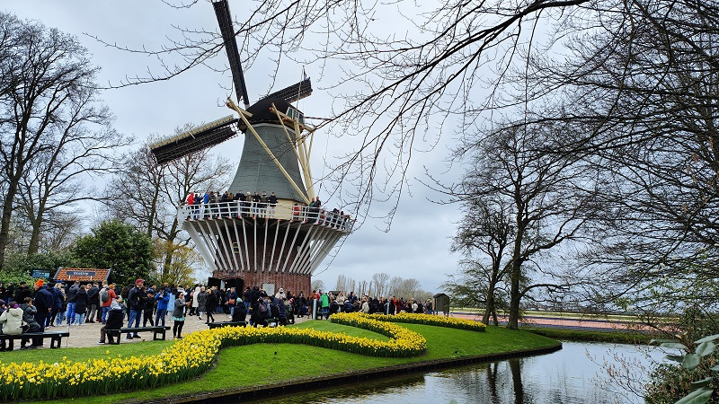
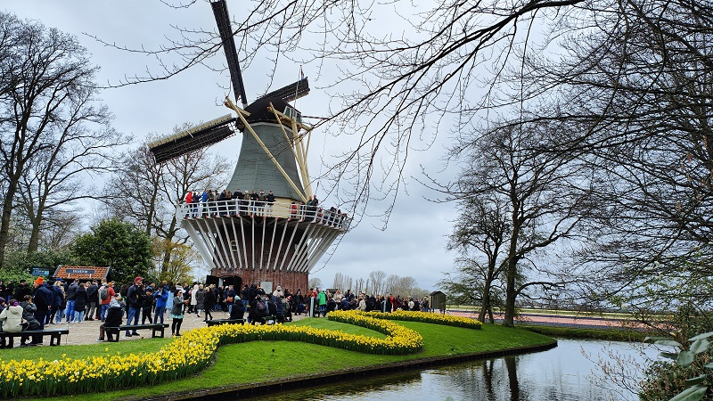

Home Galerij Info
Ontdek de magie van de Keukenhof in onze fotogalerij! Bekijk onze adembenemende foto's van miljoenen kleurrijke bloemen en prachtige landschappen. Laat je inspireren door de schoonheid van de tulpenvelden en de artistieke kunstwerken die onze bezoekers elk jaar opnieuw betoveren. Of je nu op zoek bent naar romantische foto's met je partner of familiekiekjes met de kinderen, onze fotogalerij biedt voor elk wat wils. Kom en laat je betoveren door de wonderlijke wereld van de Keukenhof!
 
